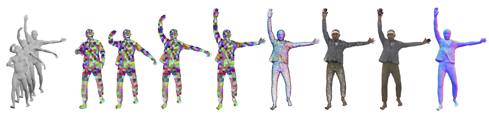

Learning to model and reconstruct humans in clothing is challenging due to articulation, non-rigid deformation, and varying clothing types and topologies.
To enable learning, the choice of representation is the key.
Recent work uses neural networks to parameterize local surface elements.
This approach captures locally coherent geometry and non-planar details, can deal with varying topology, and does not require registered training data.
However, naively using such methods to model 3D clothed humans fails to capture fine-grained local deformations and generalizes poorly.
To address this, we present three key innovations:
First, we deform surface elements based on a human body model such that large-scale deformations caused by articulation are explicitly separated from topological changes and local clothing deformations.
Second, we address the limitations of existing neural surface elements by regressing local geometry from local features, significantly improving the expressiveness.
Third, we learn a pose embedding on a 2D parameterization space that encodes posed body geometry, improving generalization to unseen poses by reducing non-local spurious correlations.
We demonstrate the efficacy of our surface representation by learning models of complex clothing from point clouds. The clothing can change topology and deviate from the topology of the body. Once learned, we can animate previously unseen motions, producing high-quality point clouds, from which we generate realistic images with neural rendering.
We assess the importance of each technical contribution and show that our approach outperforms the state-of-the-art methods in terms of reconstruction accuracy and inference time.